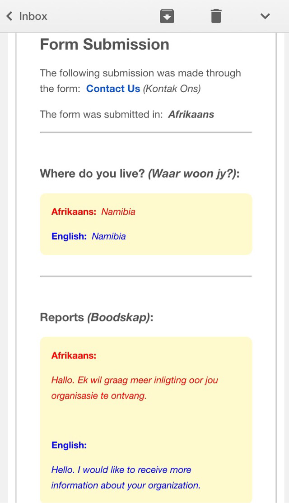

About | Install | Getting Started | Important Notes
TSFormTranslator
TSFormTranslator is a demonstration Google Apps Script which enables a Google Form owner to translate a form created in English into one of 79 different languages using Google Translate.
Once the form has been translated and shared, form users can submit responses in the form's language.
A nicely formatted email containing the submitted content will be sent to the form owner in both the form language and English translation each time a form user submits to the form.
If you and your form users are using a browser such as Chrome (which already supports translation), you may be interested in TSContactForm instead.
For example, the following image shows a simple Google Form created in English
... translated to Afrikaans via TSFormTranslator
... and an email form submission generated and sent to the form owner by TSFormTranslator

Supported Languages
| Language | Language | Language | Language | Language |
|---|---|---|---|---|
| Afrikaans | Dutch | Hungarian | Malay | Somali |
| Albanian | Esperanto | Icelandic | Maltese | Spanish |
| Arabic | Estonian | Igbo | Maori | Swahili |
| Armenian | Filipino | Indonesian | Marathi | Swedish |
| Azerbaijani | Finnish | Irish | Mongolian | Tamil |
| Basque | French | Italian | Nepali | Telugu |
| Belarusian | Galician | Japanese | Norwegian | Thai |
| Bengali | Georgian | Javanese | Persian | Turkish |
| Bosnian | German | Kannada | Polish | Ukrainian |
| Bulgarian | Greek | Khmer | Portuaguese | Urdu |
| Catalan | Gujarati | Korean | Punjabi | Vietnamese |
| Cebuano | Haitian Creole | Lao | Romanian | Welsh |
| Chinese | Hausa | Latin | Russian | Yiddish |
| Croatian | Hebrew | Latvian | Serbian | Yoruba |
| Czech | Hindi | Lithuanian | Slovak | Zulu |
| Danish | Hmong | Macendonian | Slovenian |
Installation
There are two methods available for installing TSFormTranslator.
Method 1: Easy Install with TSScriptCopy
TSScriptCopy is an application which automates the process of copying files to your Google Drive.
TSScriptCopy and its use are licensed under Apache License, Version 2.0
Follow these instructions to install the TSFormTranslator script and host form into your Google Drive with TSScriptCopy:
STEP 1: Login to your Google Drive
STEP 2: Click TSScriptCopy to access. Wait for the application to load...
(If you have not run TSScriptCopy before, you will be prompted to perform a one-time authorization to allow the application to copy scripts and host documents to your Google Drive.)


Step 3: When the TSScriptCopy page displays in your browser, locate the TSFormTranslator Copy to Drive button and click to install
Step 4: Wait for TSScriptCopy to copy the TSFormTranslator script and host form to your Google Drive. The copy process may take a minute to run...

Step 5: Access and open the TSFormTranslator host form by clicking the link in the resulting notification message.

(Click the Close link to close the notification...or exist TSScriptCopy by closing the associated browser window.)
Step 6: To use the script, see the Getting Started section below.
Method 2: Manual Installation
See the TSFormTranslator project on Github for code and manual install instructions.
Getting Started
Get started with TSFormTranslator in four easy steps:
Step 1: Create the form
If not already open, locate and open the form created during installation.
Create or modify the form as needed...see the documentation for more information.
- Theme
- Title
- Description
- Form Elements
- Confirmation message
Step 2: Open the sidebar
Select the TSFormTranslator > Open sidebar menu option.

NOTE: If you have not run TSFormTranslator before, you will be prompted to perform a one-time authorization to allow the script access. Follow the prompts and click Continue and Accept to authorize.
Wait for the sidebar to display...
Step 3: Translate the form
From the sidebar, select the translation language (1) from the drop down list and click the Set form language (2) button to translate the form into the selected language.
Wait for TSFormTranslator to complete the translation. This process may take a minute or two...
IMPORTANT NOTES:
- Google Translate is used to translate form elements. Some English words and phrases may not translate as expected in all languages.
- Some built-in Google Form text will not be translated by TSFormTranslator.
- Form Page Navigation will no longer work after form translation.
- Time, date and duration form field submissions will only show in English in the sent email.
- Some languages may only be viewable in browsers such as Chrome.
Step 4: Publish the form
View the live form by clicking the View live form button on the form toolbar.
The form is now ready to share with others...see the form sharing documentation for more information.
GOOGLE APPS USERS


Important Notes About TSFormTranslator
TSFormTranslator uses Google Translate to translate form elements. Some English words and phrases may not translate as expected in all languages.
Some built-in Google Form text will not be translated by TSFormTranslator.
Some translation languages may only be viewable in browsers such as Chrome.
Form Page Navigation will no longer work after form translation.
Time, date and duration form field submissions will only show in English in the sent email.
Google Apps Scripts are subject to daily quota limits including the number of emails sent and the Trigger Aggregate Execution Time. See the Quota Limits tab of the Google Apps Script Dashboard for more information.
TSFormTranslator may not be appropriate for high traffic forms, especially in cases where the form owner consistently receives quota limit exceeded notifications.
© 2014 Laura Taylor | Released under Apache License, Version 2.0
Documentation: Built with Harp. | Hosted on Github Pages.
Last Updated: Sun Oct 19 2014